Matbiips: Tutorial 2
In this tutorial, we consider applying sequential Monte Carlo methods for sensitivity analysis and parameter estimation in a nonlinear non-Gaussian hidden Markov model.
Contents
Statistical model
The statistical model is defined as follows.
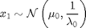
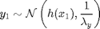
For 
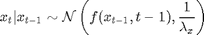
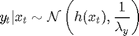
where 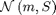 denotes the Gaussian distribution of mean 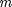 and covariance matrix 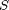, 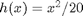, 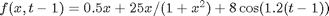, 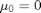, 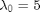, 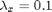. The precision of the observation noise 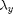 is also assumed to be unknown. We will assume a uniform prior for 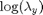:
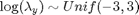
Statistical model in BUGS language
We describe the model in BUGS language in the file 'hmm_1d_nonlin.bug':
model_file = 'hmm_1d_nonlin_param.bug'; % BUGS model filename type(model_file);
var x_true[t_max], x[t_max], y[t_max]
data
{
#log_prec_y_true ~ dunif(-3, 3)
prec_y_true <- exp(log_prec_y_true)
x_true[1] ~ dnorm(mean_x_init, prec_x_init)
y[1] ~ dnorm(x_true[1]^2/20, prec_y_true)
for (t in 2:t_max)
{
x_true[t] ~ dnorm(0.5*x_true[t-1]+25*x_true[t-1]/(1+x_true[t-1]^2)+8*cos(1.2*(t-1)), prec_x)
y[t] ~ dnorm(x_true[t]^2/20, prec_y_true)
}
}
model
{
log_prec_y ~ dunif(-3, 3)
prec_y <- exp(log_prec_y)
x[1] ~ dnorm(mean_x_init, prec_x_init)
y[1] ~ dnorm(x[1]^2/20, prec_y)
for (t in 2:t_max)
{
x[t] ~ dnorm(0.5*x[t-1]+25*x[t-1]/(1+x[t-1]^2)+8*cos(1.2*(t-1)), prec_x)
y[t] ~ dnorm(x[t]^2/20, prec_y)
}
}
Installation of Matbiips
- Download the latest version of Matbiips
- Unzip the archive in some folder
- Add the Matbiips folder to the Matlab search path
matbiips_path = '../../matbiips';
addpath(matbiips_path)
General settings
set(0, 'DefaultAxesFontsize', 14); set(0, 'Defaultlinelinewidth', 2); light_blue = [.7, .7, 1];
Set the random numbers generator seed for reproducibility
if isoctave() || verLessThan('matlab', '7.12') rand('state', 0) else rng('default') end
Load model and data
Model parameters
t_max = 20; mean_x_init = 0; prec_x_init = 1; prec_x = 10; log_prec_y_true = log(1); % True value used to sample the data data = struct('t_max', t_max, 'prec_x_init', prec_x_init,... 'prec_x', prec_x, 'log_prec_y_true', log_prec_y_true,... 'mean_x_init', mean_x_init);
Compile BUGS model and sample data
sample_data = true; % Boolean model = biips_model(model_file, data, 'sample_data', sample_data); % Create Biips model and sample data data = model.data;
* Parsing model in: hmm_1d_nonlin_param.bug * Compiling data graph Declaring variables Resolving undeclared variables Allocating nodes Graph size: 280 Sampling data Reading data back into data table * Compiling model graph Declaring variables Resolving undeclared variables Allocating nodes Graph size: 284
Biips Sensitivity analysis with Sequential Monte Carlo
Let now use Biips to provide estimates of the marginal log-likelihood and penalized marginal log-likelihood given various values of the log-precision parameters .
Parameters of the algorithm.
n_part = 100; % Number of particles param_names = {'log_prec_y'}; % Parameter for which we want to study sensitivity param_values = {-5:.2:3}; % Range of values
Run sensitivity analysis with SMC
out_sens = biips_smc_sensitivity(model, param_names, param_values, n_part);
* Analyzing sensitivity with 100 particles |--------------------------------------------------| 100% |**************************************************| 41 iterations in 1.27 s
Plot log-marginal likelihood and penalized log-marginal likelihood
figure('name', 'Log-marginal likelihood'); plot(param_values{1}, out_sens.log_marg_like, '.') xlabel('Parameter log\_prec\_y') ylabel('Log-marginal likelihood') box off figure('name', 'Penalized log-marginal likelihood'); plot(param_values{1}, out_sens.log_marg_like_pen, '.') xlabel('Parameter log\_prec\_y') ylabel('Penalized log-marginal likelihood') box off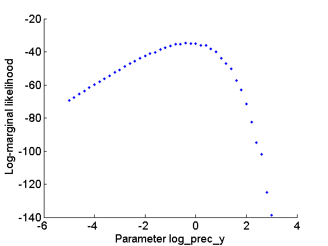 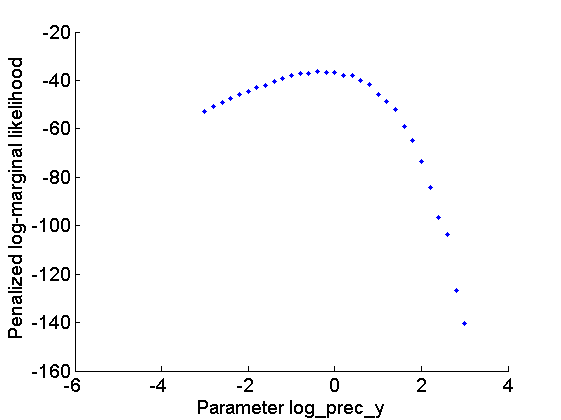
Biips Particle Marginal Metropolis-Hastings
We now use Biips to run a Particle Marginal Metropolis-Hastings in order to obtain posterior MCMC samples of the parameter and the variables 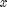.
Parameters of the PMMH.
param_names indicates the parameters to be sampled using a random walk Metroplis-Hastings step. For all the other variables, Biips will use a sequential Monte Carlo as proposal.
n_burn = 2000; % nb of burn-in/adaptation iterations n_iter = 2000; % nb of iterations after burn-in thin = 1; % thinning of MCMC outputs n_part = 50; % nb of particles for the SMC var_name = 'log_prec_y'; param_names = {var_name}; % name of the variables updated with MCMC (others are updated with SMC) latent_names = {'x'}; % name of the variables updated with SMC and that need to be monitored
Init PMMH
obj_pmmh = biips_pmmh_init(model, param_names, 'inits', {-2},... 'latent_names', latent_names); % creates a pmmh object
* Initializing PMMH
Run PMMH
obj_pmmh = biips_pmmh_update(obj_pmmh, n_burn, n_part); % adaptation and burn-in iterations [obj_pmmh, out_pmmh, log_marg_like_pen, log_marg_like, stats_pmmh] = biips_pmmh_samples(obj_pmmh, n_iter, n_part,... 'thin', thin); % samples
* Adapting PMMH with 50 particles |--------------------------------------------------| 100% |++++++++++++++++++++++++++++++++++++++++++++++++++| 2000 iterations in 15.14 s * Generating 2000 PMMH samples with 50 particles |--------------------------------------------------| 100% |**************************************************| 2000 iterations in 14.09 s
Some summary statistics
summ_pmmh = biips_summary(out_pmmh, 'probs', [.025, .975]);
Compute kernel density estimates
kde_pmmh = biips_density(out_pmmh);
Posterior mean and credible interval of the parameter
summ_param = getfield(summ_pmmh, var_name); fprintf('Posterior mean of %s: %.1f\n', var_name, summ_param.mean); fprintf('95%% credible interval of %s: [%.1f, %.1f]\n', var_name, ... summ_param.quant{1}, summ_param.quant{2});
Posterior mean of log_prec_y: -0.4 95% credible interval of log_prec_y: [-1.2, 0.4]
Trace of MCMC samples for the parameter
figure('name', 'PMMH: Trace samples parameter') samples_param = getfield(out_pmmh, var_name); param_lab = 'log\_prec\_y'; plot(samples_param, 'linewidth', 1) hold on plot(0, data.log_prec_y_true, '*g'); xlabel('Iteration') ylabel(param_lab) title(param_lab) legend({'PMMH samples', 'True value'}) legend boxoff box off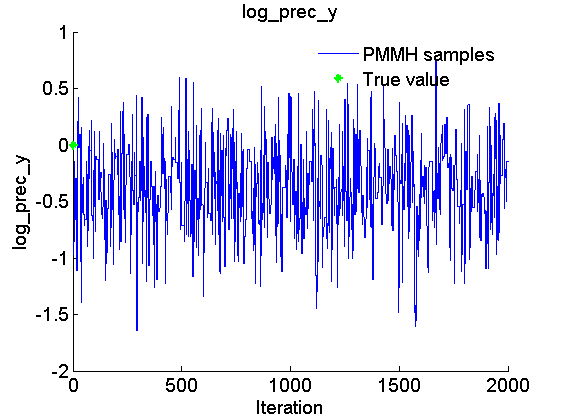
Histogram and kde estimate of the posterior for the parameter
figure('name', 'PMMH: Histogram posterior parameter') hist(samples_param, 15) h = findobj(gca, 'Type', 'patch'); set(h, 'EdgeColor', 'w') hold on plot(data.log_prec_y_true, 0, '*g'); xlabel(param_lab) ylabel('Number of samples') legend({'Posterior samples', 'True value'}) legend boxoff box off figure('name', 'PMMH: KDE estimate posterior parameter') kde_param = getfield(kde_pmmh, var_name); plot(kde_param.x, kde_param.f); hold on plot(data.log_prec_y_true, 0, '*g'); xlabel(param_lab); ylabel('Posterior density'); legend({'Posterior density', 'True value'}) legend boxoff box off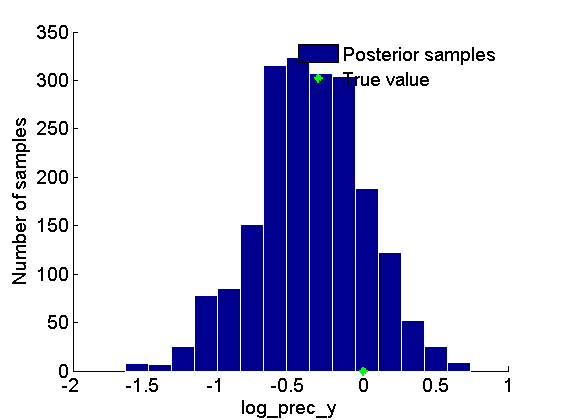 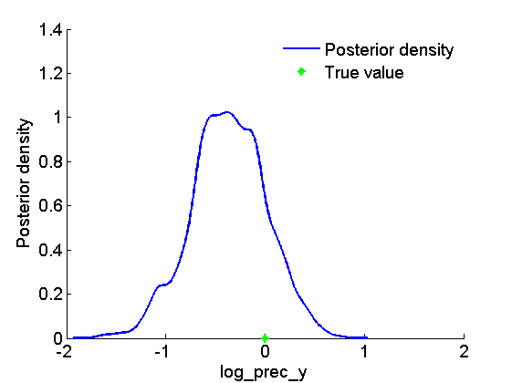
Posterior mean and quantiles for x
figure('name', 'PMMH: Posterior mean and quantiles') x_pmmh_mean = summ_pmmh.x.mean; x_pmmh_quant = summ_pmmh.x.quant; h = fill([1:t_max, t_max:-1:1], [x_pmmh_quant{1}; flipud(x_pmmh_quant{2})], 0); set(h, 'edgecolor', 'none', 'facecolor', light_blue) hold on plot(1:t_max, x_pmmh_mean, 'linewidth', 3) plot(1:t_max, data.x_true, 'g') xlabel('Time') ylabel('x') legend({'95% credible interval', 'PMMH mean estimate', 'True value'}) box off legend boxoff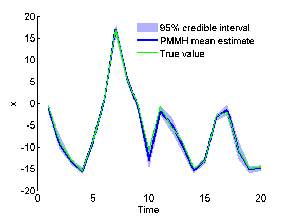
Trace of MCMC samples for x
figure('name', 'PMMH: Trace samples x') time_index = [5, 10, 15]; for k=1:numel(time_index) tk = time_index(k); subplot(2, 2, k) plot(out_pmmh.x(tk, :), 'linewidth', 1) hold on plot(0, data.x_true(tk), '*g'); xlabel('Iteration') ylabel(['x_{', num2str(tk), '}']) title(['t=', num2str(tk)]); box off end h = legend({'PMMH samples', 'True value'}); set(h, 'position', [0.7, 0.25, .1, .1]) legend boxoff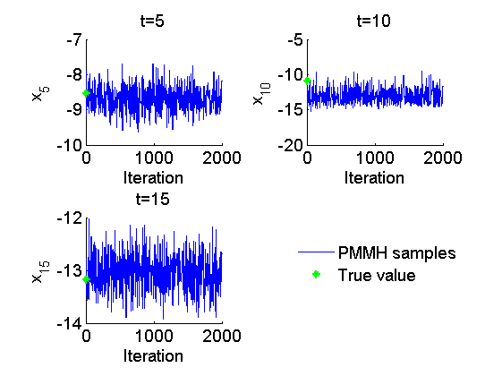
Histogram and kernel density estimate of posteriors of x
figure('name', 'PMMH: Histograms marginal posteriors') for k=1:numel(time_index) tk = time_index(k); subplot(2, 2, k) hist(out_pmmh.x(tk, :), -16:.3:-7); h = findobj(gca, 'Type', 'patch'); set(h, 'EdgeColor', 'w') hold on plot(data.x_true(tk), 0, '*g'); xlabel(['x_{', num2str(tk), '}']); ylabel('Number of samples'); title(['t=', num2str(tk)]); box off end h = legend({'Posterior samples', 'True value'}); set(h, 'position', [0.7, 0.25, .1, .1]) legend boxoff figure('name', 'PMMH: KDE estimates marginal posteriors') for k=1:numel(time_index) tk = time_index(k); subplot(2, 2, k) plot(kde_pmmh.x(tk).x, kde_pmmh.x(tk).f); hold on plot(data.x_true(tk), 0, '*g'); xlabel(['x_{', num2str(tk), '}']); ylabel('Posterior density'); title(['t=', num2str(tk)]); box off end h = legend({'Posterior density', 'True value'}); set(h, 'position', [0.7, 0.25, .1, .1]); legend boxoff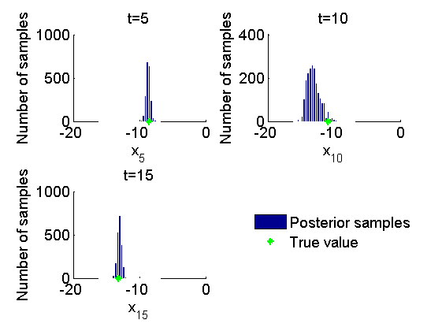 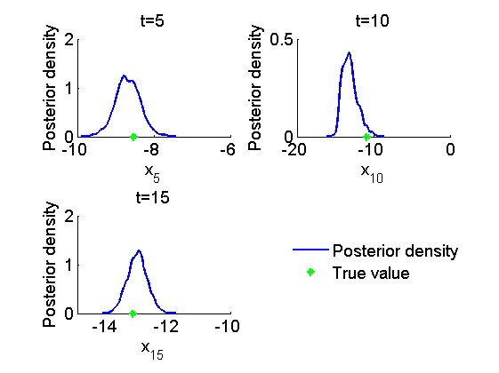
Clear model
biips_clear()